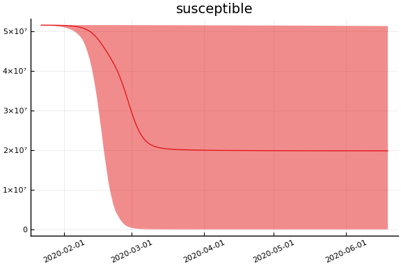
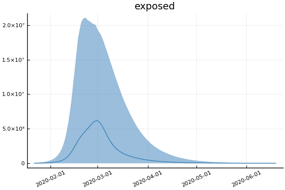
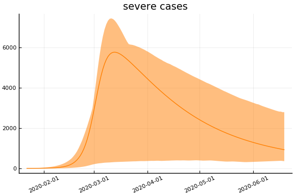
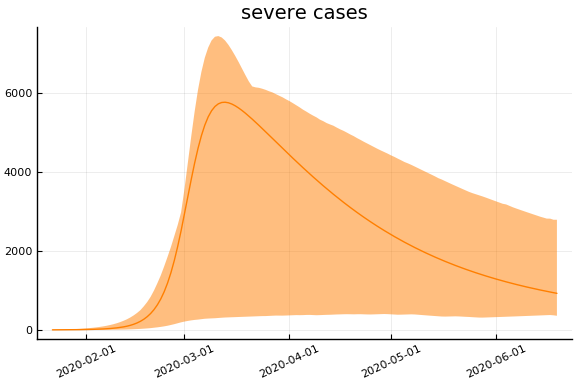
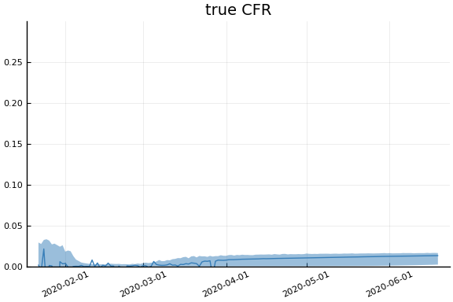
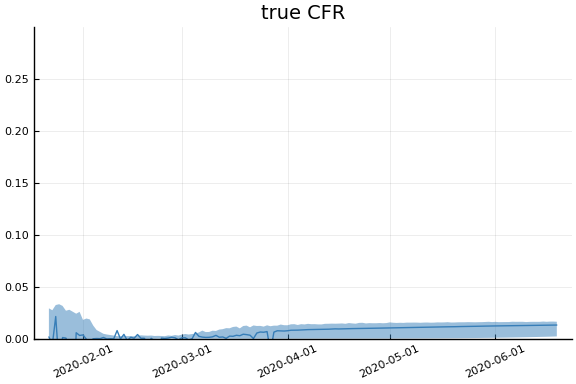

This work is licensed under a Creative Commons Attribution-ShareAlike 4.0 International License
using CovidSEIR, Plots, DataFrames, JLD2, StatsPlots, MCMCChains
Plots.pyplot()
jmddir = normpath(joinpath(dirname(Base.find_package("CovidSEIR")),"..","docs","jmd"))
covdf = covidjhudata();
South Korea¶
korea = CountryData(covdf, "Korea, South")
CovidSEIR.CountryData{Float64,Int64}(5.1635256e7, [1, 2, 3, 4, 5, 6, 7, 8,
9, 10 … 77, 78, 79, 80, 81, 82, 83, 84, 85, 86], [0.0, 0.0, 0.0, 0.0, 0.0
, 0.0, 0.0, 0.0, 0.0, 0.0 … 192.0, 200.0, 204.0, 208.0, 211.0, 214.0, 217
.0, 222.0, 225.0, 229.0], [0.0, 0.0, 0.0, 0.0, 0.0, 0.0, 0.0, 0.0, 0.0, 0.0
… 6694.0, 6776.0, 6973.0, 7117.0, 7243.0, 7368.0, 7447.0, 7534.0, 7616.0
, 7757.0], [1.0, 1.0, 2.0, 2.0, 3.0, 4.0, 4.0, 4.0, 4.0, 11.0 … 3445.0, 3
408.0, 3246.0, 3125.0, 3026.0, 2930.0, 2873.0, 2808.0, 2750.0, 2627.0])
using Turing
mdl = CovidSEIR.TimeVarying.countrymodel(korea)
cc = Turing.psample(mdl, NUTS(0.65), 5000, 4)
import JLD2
JLD2.@save "$jmddir/korea_tv_$(Dates.today()).jld2" cc
JLD2.@load "$jmddir/korea_dhmc_2020-04-13.jld2" cc dayt0;
cc = MCMCChains.Chains(collect(cc.value.data), replace.(cc.name_map.parameters, r"([^\[])([1-9])" => s"\1[\2]"))
Object of type Chains, with data of type 5000×15×4 Array{Float64,3}
Iterations = 1:5000
Thinning interval = 1
Chains = 1, 2, 3, 4
Samples per chain = 5000
parameters = τ, sigD, sigC, sigRc, a, pE0, p[1], p[2], β[1], β[2], β
[3], γ[1], γ[2], ρ[1], ρ[2]
2-element Array{MCMCChains.ChainDataFrame,1}
Summary Statistics
parameters mean std naive_se mcse ess r_hat
────────── ──────── ──────── ──────── ─────── ─────── ──────
τ 0.0146 0.0597 0.0004 0.0041 80.3213 1.3408
sigD 5.3642 2.4216 0.0171 0.1694 80.3213 5.0384
sigC 951.3287 978.9917 6.9225 69.0719 80.3213 2.2197
sigRc 845.4857 105.0627 0.7429 5.9862 80.3213 1.4793
a 0.5215 0.2690 0.0019 0.0176 80.3213 1.8935
pE0 0.0002 0.0005 0.0000 0.0000 80.3213 1.4380
p[1] 0.0316 0.0626 0.0004 0.0044 80.3213 2.4790
p[2] 0.0031 0.0089 0.0001 0.0006 80.3213 1.2621
β[1] 0.7778 0.8358 0.0059 0.0555 80.3213 1.4458
β[2] 0.6354 0.7074 0.0050 0.0398 80.3370 1.2070
β[3] 2.0175 1.3794 0.0098 0.0966 80.3213 3.3188
γ[1] 1.5137 1.1407 0.0081 0.0801 80.3213 3.0029
γ[2] 0.0515 0.0970 0.0007 0.0068 80.3213 1.3837
ρ[1] 0.5549 0.2274 0.0016 0.0136 80.3213 1.3732
ρ[2] 47.0605 11.1717 0.0790 0.7350 80.3213 1.2892
Quantiles
parameters 2.5% 25.0% 50.0% 75.0% 97.5%
────────── ──────── ──────── ──────── ───────── ─────────
τ 0.0000 0.0000 0.0000 0.0001 0.2457
sigD 2.4786 2.9594 5.5550 7.6868 8.8722
sigC 217.4268 265.3300 550.1108 1232.7812 4068.7156
sigRc 673.8938 765.5432 836.1810 916.0544 1064.8168
a 0.0746 0.3490 0.5506 0.7427 0.9411
pE0 0.0000 0.0000 0.0000 0.0000 0.0016
p[1] 0.0000 0.0001 0.0003 0.0240 0.2330
p[2] 0.0008 0.0008 0.0008 0.0009 0.0354
β[1] 0.0000 0.0026 0.5025 1.2954 2.8868
β[2] 0.0000 0.0583 0.3820 1.0063 2.4575
β[3] 0.0405 0.7791 1.7061 3.3934 4.2446
γ[1] 0.0316 0.5668 1.1303 3.0000 3.0000
γ[2] 0.0214 0.0264 0.0275 0.0286 0.4204
ρ[1] 0.1889 0.3367 0.5769 0.7514 0.9503
ρ[2] 28.7635 38.8180 46.5332 53.4753 75.3812
Estimates¶
plot(cc)

describe(cc)
2-element Array{MCMCChains.ChainDataFrame,1}
Summary Statistics
parameters mean std naive_se mcse ess r_hat
────────── ──────── ──────── ──────── ─────── ─────── ──────
τ 0.0146 0.0597 0.0004 0.0041 80.3213 1.3408
sigD 5.3642 2.4216 0.0171 0.1694 80.3213 5.0384
sigC 951.3287 978.9917 6.9225 69.0719 80.3213 2.2197
sigRc 845.4857 105.0627 0.7429 5.9862 80.3213 1.4793
a 0.5215 0.2690 0.0019 0.0176 80.3213 1.8935
pE0 0.0002 0.0005 0.0000 0.0000 80.3213 1.4380
p[1] 0.0316 0.0626 0.0004 0.0044 80.3213 2.4790
p[2] 0.0031 0.0089 0.0001 0.0006 80.3213 1.2621
β[1] 0.7778 0.8358 0.0059 0.0555 80.3213 1.4458
β[2] 0.6354 0.7074 0.0050 0.0398 80.3370 1.2070
β[3] 2.0175 1.3794 0.0098 0.0966 80.3213 3.3188
γ[1] 1.5137 1.1407 0.0081 0.0801 80.3213 3.0029
γ[2] 0.0515 0.0970 0.0007 0.0068 80.3213 1.3837
ρ[1] 0.5549 0.2274 0.0016 0.0136 80.3213 1.3732
ρ[2] 47.0605 11.1717 0.0790 0.7350 80.3213 1.2892
Quantiles
parameters 2.5% 25.0% 50.0% 75.0% 97.5%
────────── ──────── ──────── ──────── ───────── ─────────
τ 0.0000 0.0000 0.0000 0.0001 0.2457
sigD 2.4786 2.9594 5.5550 7.6868 8.8722
sigC 217.4268 265.3300 550.1108 1232.7812 4068.7156
sigRc 673.8938 765.5432 836.1810 916.0544 1064.8168
a 0.0746 0.3490 0.5506 0.7427 0.9411
pE0 0.0000 0.0000 0.0000 0.0000 0.0016
p[1] 0.0000 0.0001 0.0003 0.0240 0.2330
p[2] 0.0008 0.0008 0.0008 0.0009 0.0354
β[1] 0.0000 0.0026 0.5025 1.2954 2.8868
β[2] 0.0000 0.0583 0.3820 1.0063 2.4575
β[3] 0.0405 0.7791 1.7061 3.3934 4.2446
γ[1] 0.0316 0.5668 1.1303 3.0000 3.0000
γ[2] 0.0214 0.0264 0.0275 0.0286 0.4204
ρ[1] 0.1889 0.3367 0.5769 0.7514 0.9503
ρ[2] 28.7635 38.8180 46.5332 53.4753 75.3812
Fit¶
sdf = simtrajectories(cc, korea, 1:150)
f = plotvars(sdf, korea, dayt0=dayt0)
plot!(f.fit, xlim=nothing)

We see that the model does not fit the rapid drop in new cases in South Korea. This may be caused by the model’s implausible assumption that transmission and testing rates are constant over time.
Implications¶
for fig in f.trajectories
display(plot(fig, xlim=nothing))
end
 

 
 


 
